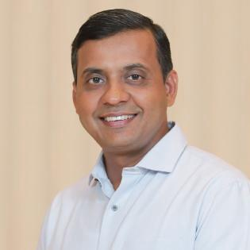

The Evolve Foundation helps college students build real clarity, real confidence, and a real sense of direction — starting with Launchpad, our flagship 8-week guided programme, delivered through honest reflection, real conversation, and thoughtful facilitation.
The Evolve Foundation exists because too many students are being prepared for exams, interviews, and careers, but not for the deeper questions that shape their future. Through structured developmental experiences like Launchpad, we help young people gain clarity about who they are, confidence in where they are going, and direction for what comes next.
THE EVOLVE FOUNDATION
Our first step toward that vision is Launchpad — an 8-week guided programme built exactly for this.
These aren't shortcomings — they're patterns we see again and again, and they're simply part of navigating a fast-changing world with more choices than any generation before.
Big decisions are often shaped by family expectations or peer pressure, simply because students rarely get structured space to explore what they themselves actually want.
Confidence takes more than interview tips — it takes a genuine, tested sense of what a student is good at, beyond what marks alone can show.
Colleges prepare students for exams, and placement cells prepare them for interviews. Launchpad exists for the space in between.
Not a lecture series. A sustained, facilitator-led arc — each module builds directly on what the last one produced.
A tested picture of who they are — strengths backed by proof, and confirmed by the people who know them best.
The fear underneath avoidance gets named; a direction gets chosen because it connects to a real strength, not just excitement.
Direction becomes an actual decision — and a story they can say out loud with real conviction, practiced, not just imagined.
A plan for when it's hard, one small habit, and a dated, written 30-day action plan — assembled, not invented last-minute.
90–120 minutes, small groups, one facilitator. No lectures.
Ground the room, quick check-in.
A named, reusable technique — taught and anchored in a real example.
Use it on your own life, then share with a partner.
Real patterns, connected across the room.
Something specific and yours to keep.
Backed by real moments, confirmed by people who know you — not adjectives you made up.
Chosen because it connects to what you're good at, not just what sounds exciting.
Practiced out loud, not just thought about privately.
Dated, specific steps — plus a plan for what to do when it gets hard.
Alongside the eight weekly group sessions, every student also gets dedicated one-on-one time to work through what's immediately on their mind — a specific decision, a specific worry, a specific conversation they're dreading. The group builds the framework; the 1:1 time applies it to whatever's actually going on in your life right now. Included in the programme fee, no separate cost.
Small groups, live and online. Register your interest below and we'll follow up directly with exact dates.
Register your interest and we'll reach out directly to confirm your start date and next steps.
The Evolve Foundation's long-term vision is to become the trusted platform where students across India come to figure out their lives before entering the real world. Launchpad is deliberately the first, narrow, proven step toward that — everything below is built on top of the trust and outcomes Launchpad creates, not alongside it.
The 8-week guided journey through clarity, confidence, and direction — live, online, and the proving ground for everything that follows.
Structured 1:1 or small-group mentorship connecting Launchpad alumni with industry experts, once the model has proven itself at scale.
Helping students navigate what comes after — managing money, handling failure, and building the resilience personal growth requires.
A digital platform serving as a lifelong growth companion for students, wherever they are in their journey.

FounderAfter 30+ years serving in leadership capacities for global financial institutions and Wall Street firms, I felt a growing desire to invest my skills and experience in something that could make a meaningful impact to students.
This is why The Evolve Foundation exists. The vision for The Evolve Foundation is to help young adults develop the clarity, confidence, and self-awareness needed to navigate life's most important decisions. I believe every student deserves the opportunity to understand who they are before deciding what they should become.
This is why Launchpad is built the way it is — one small cohort at a time, with real attention on each student rather than a one-size-fits-all workshop.
15–20 seats. Live and online. Register your interest — we'll follow up directly with your start date.
Join Cohort 01 →